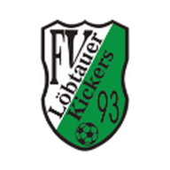

Website auf den Home-Bildschirm
Danach öffnest du Quiz, Termine und Unterlagen direkt über das Kickers-Wappen – fast wie eine normale App. Eine Anmeldung im App Store oder Play Store ist nicht nötig.

Direkt installieren
Dein Browser kann die Seite direkt installieren.
iPhone oder iPad · Safari
- Öffne diese Website in Safari.
- Tippe auf ↑ Teilen. Je nach Safari-Ansicht liegt die Taste oben oder unten.
- Scrolle und wähle „Zum Home-Bildschirm“. Fehlt der Punkt, findest du ihn unter „Aktionen bearbeiten“.
- Aktiviere, falls angeboten, „Als Web-App öffnen“ und tippe auf „Hinzufügen“.
Das Kickers-Wappen erscheint anschließend auf deinem Home-Bildschirm. Die Installation gilt nur für dieses Gerät.
Android · Chrome
- Öffne diese Website in Chrome.
- Tippe rechts oben auf ⋮.
- Wähle „Zum Startbildschirm hinzufügen“ oder „App installieren“. Die Bezeichnung hängt vom Gerät und der Chrome-Version ab.
- Bestätige mit „Installieren“ oder „Hinzufügen“.
Auf unterstützten Android-Geräten erscheint oben zusätzlich der direkte Installieren-Knopf.
Offizielle Anleitungen: Apple Support · Google Chrome-Hilfe